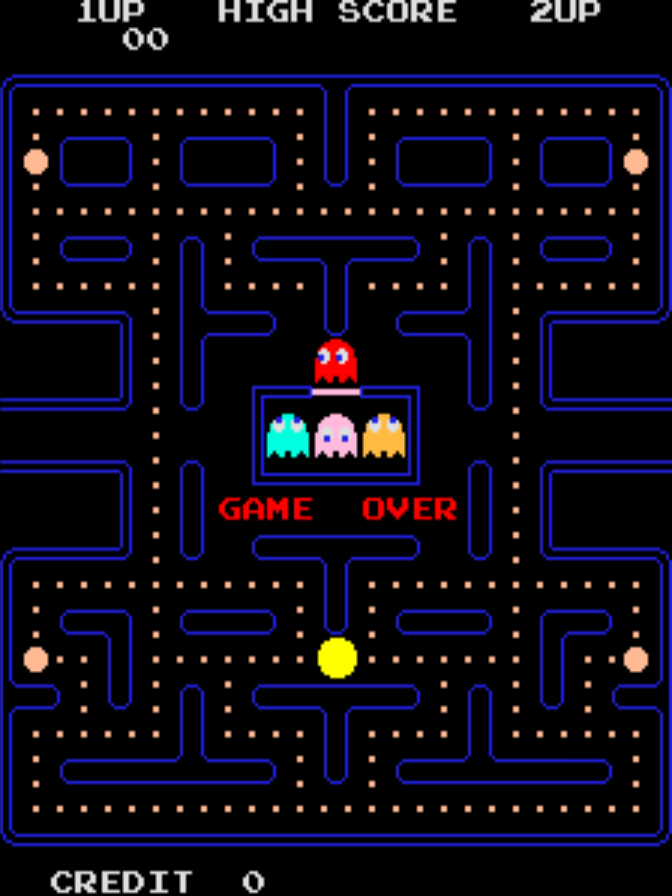

Pac-Man est un jeu d'arcade emblématique sorti en 1980 et développé par Namco.
Son gameplay simple mais addictif, où le joueur doit manger des pac-gommes tout en évitant les fantômes,
en fait l'un des jeux les plus célèbres de l'histoire du jeu vidéo.
Comparé à Pong, ce jeu contient beaucoup plus de ressources tels que des couleurs autres que le noir et blanc mais aussi des effets sonores, un système de progression, de difficulté etc...